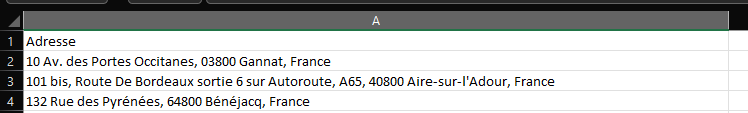

Dans le monde
des données d'entreprise, l'information géographique est
l'une des clés de la prise de décision éclairée. Savoir où
se trouvent vos clients, vos magasins ou vos partenaires
commerciaux peut faire la différence entre le succès et la
stagnation. Mais pour accéder à cela, vous allez avoir
besoin d'un élément essentiel : les coordonnées
géographiques. Les coordonnées vous permettront de relier
votre performance avec d'autres type d'outils ou
d'informations : météorologie, zone de chalandise,
intensité concurrentiel, trafic, revenus et demographie !
Prérequis:
- Un fichier CSV avec les adresses
- Clé API OpenCageData pour le service de géocodage
- La possibilité d'executer un code en python
1. Installez les
bibliothèques suivantes :
pip install pandas
pip install geopy
pip install opencage
Voici à quoi
doit ressembler le fichier nommé magasin.csv
2. Faites tourner ce script
dans le même répertoire :
# Import des bibliothèques nécessaires
import pandas as pd
from geopy.geocoders import Nominatim
from opencage.geocoder import OpenCageGeocode
# Lecture du fichier CSV
df = pd.read_csv('magasin.csv')
# Paramétrage de la clé API OpenCageData
api_key = '0123456789'
geocoder = OpenCageGeocode(api_key)
# Géocodez les adresses
def geocode_address(Address):
location = geocoder.geocode(Address)
if location:
return location[0]['geometry']
else:
return None
df['coordinates'] = df['Adresse'].apply(geocode_address)
# Divisez les coordonnées en latitude et longitude
df[['latitude', 'longitude']] = pd.DataFrame(df['coordinates'].to_list(), index=df.index)
# Enregistrez dans un nouveau fichier CSV
df.to_csv('magasin_geocoded.csv', index=False, encoding='utf-8-sig')
Vous
patientez et c'est terminé !

Gardez en
tête que même avec une exhaustivité des données
impéccable, le service de geocodage n'est pas
infaillible et peut insérer de mauvaises
interprétations. Sur une grosse volumétrie l'impact
devient probablement négligeable mais sur une petite
cardinalité autant le faire à la main pour s'assurer
directement du bon emplacement.
Vous pouvez
maintenant passer à la suite :)
- Trouver mes concurrents dans un rayon de x km (soon)
- Intégrer des données météo par unité commerciale (soon)